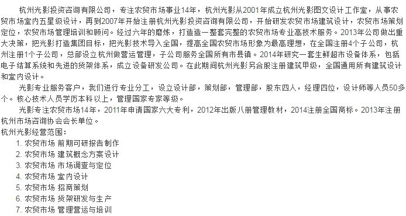

<div class="aboutgy" style="padding: 10px">
    
    <!---->
    <p>&emsp;&emsp;杭州光影投资咨询有限公司，专注农贸市场事业14年，杭州光影从2001年成立杭州光影图文设计工作室，从事农贸市场室内五星级设计，再到2007年开始注册杭州光影投资咨询有限公司，开始研发农贸市场建筑设计，农贸市场策划定位，农贸市场管理培训和顾问。经过六年的磨炼，打造造一整套完整的农贸市场专业高技术服务。2013年公司做出重大决策，把光影打造集团目标，把光影技术导入全国，提高全国农贸市场形象为最高理想，在全国注册4个子公司，杭州注册1个子公司，总部设立杭州做营运管理，子公司服务全国所有市县镇。2014年研究一套生鲜超市设备体系，包括电子结算系统和先进的货架体系，成立设备研发公司。在此期间杭州光影另合股注册建筑甲级，全国通用所有建筑设计和室内设计。<br/>        &emsp;&emsp;光影专业服务客户，我们进行专业分工，设立设计部，策划部，管理部，股东四人，经理四位，设计师等人员50多个。核心技术人员学历本科以上，管理国家专家等级。<br/> &emsp;&emsp;光影专注农贸市场14年，2011年申请国家六大专利，2012年出版八册管理教材，2014注册全国商标。2013年注册杭州市场咨询协会会长单位。 杭州光影经营范围： <br/>1. 农贸市场 前期可研报告制作<br/> 2. 农贸市场 建筑概念方案设计<br/> 3. 农贸市场 市场调查与定位<br/>        4. 农贸市场 室内设计<br/> 5. 农贸市场 招商策划
        <br/> 6. 农贸市场 货架研发与生产 <br/>7. 农贸市场 管理营运与培训
    </p>
</div>